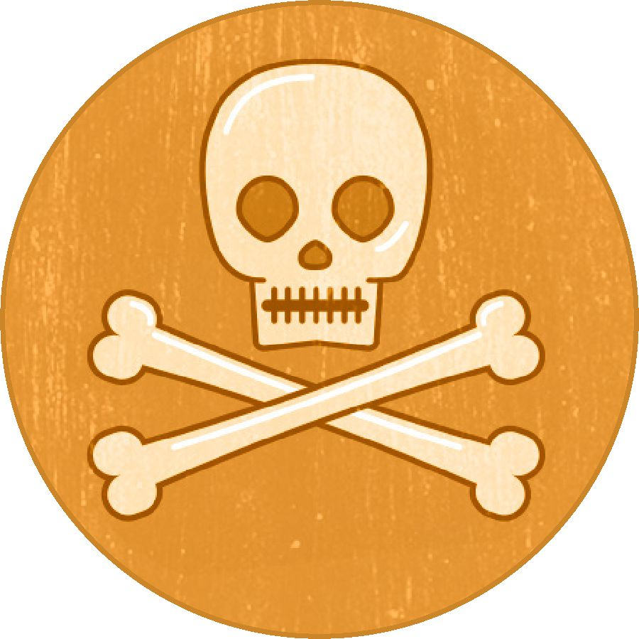

The Bible doesn’t condemn drinking alcohol in moderation when it is legal to do so. It does, however, prohibit drunkenness.—Psalm 104:15; 1 Corinthians 6:10.
But what if you feel pressured to drink in circumstances that the law or your parents do not allow?
Some of your peers may feel that drinking is essential to having a good time. But what can happen after the drink?
Legal trouble. Depending on where you live, if you drink alcohol when it is not legal to do so, you could be fined, be charged with a crime, lose your driver’s license, be required to perform community service, or even serve jail time.—Romans 13:3.
Damaged reputation. Alcohol lowers inhibitions. Under its influence you could say or do things that you would later regret. (Proverbs 23:31-33) In this age of social media, your actions could have a lasting impact on your reputation.
Weakened defenses. Alcohol can leave you easy prey to physical or sexual assault. It can also make you susceptible to the influence of others, which can lead to further risky or illegal behavior.
Addiction. Some research indicates that the younger you start drinking, the greater your likelihood of developing a dependency. Drinking to cope with stress, loneliness, or boredom creates a cycle that can get harder and harder to break.

Death. In a recent year, alcohol-impaired driving caused one fatality every 52 minutes in the United States. During one five-year period, over 1,500 people under the age of 21 died per year in alcohol-related motor vehicle crashes. Even if you haven’t had alcohol, you take a big risk if you accept a ride from someone who has been drinking.
Make a resolve
You can avoid the dangerous and costly consequences of improper drinking if you decide in advance what you will do.
Bible Principle: “The shrewd one sees the danger and conceals himself.” (Proverbs 22:3) It is unwise to drink before driving or engaging in any other activity that requires full concentration.
Resolve: ‘If I choose to drink alcohol, it will not be until it is legal and the circumstances are right.’
Bible Principle: “You are slaves of the one you obey.” (Romans 6:16) If you drink just because your peers are doing it, you are allowing others to control you. If you drink to ease boredom or to cope with stress, you are not developing the skills you need to deal with your problems.
Resolve: ‘I will not let my peers pressure me into drinking.’
Bible principle: “Do not be among those who drink too much.” (Proverbs 23:20) The wrong type of associates can undermine your resolve. You put yourself at risk when you are with others who misuse alcohol.
Resolve: ‘I will not be a close associate of those who misuse alcohol.’